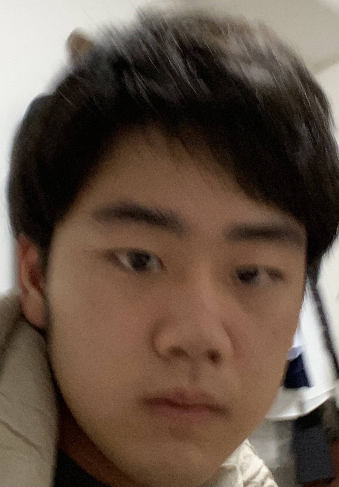

Ryo Sato

Ryo Sato
Welcome to my page! I am Ryo, a 2nd-year undergraduate student at Pomona College, studying neuroscience! I am interested in grid cells in the endothelial cortex, and topological big data analysis of neural computations!
Projects: